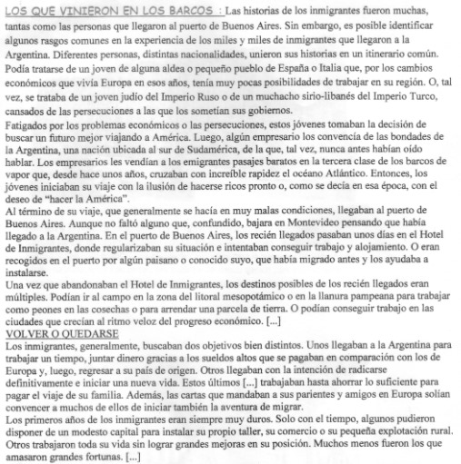
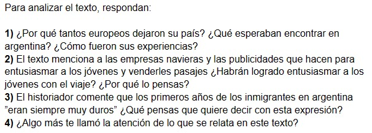
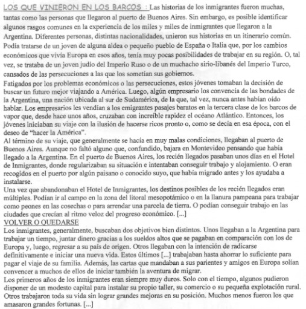
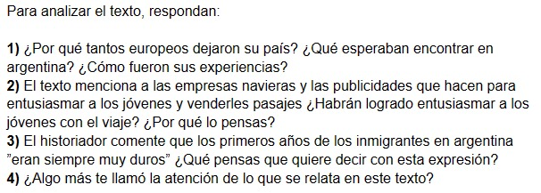
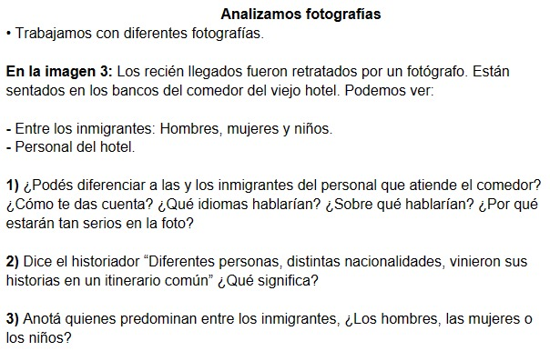
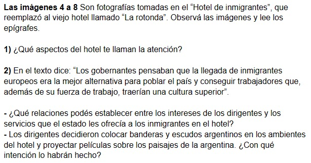

7 de mayo (7/5)
Descargar .docx (Archivo Word) 



• Lean el siguiente texto del historiador Luciano de Privitellio:
Para analizar el texto, respondan:
1) ¿Por qué tantos europeos dejaron su país? ¿Qué esperaban encontrar en argentina? ¿Cómo fueron sus experiencias?
2) El texto menciona a las empresas navieras y las publicidades que hacen para entusiasmar a los jóvenes y venderles pasajes ¿Habrán logrado entusiasmar a los jóvenes con el viaje? ¿Por qué lo pensas?
3) El historiador comente que los primeros años de los inmigrantes en argentina ”eran siempre muy duros” ¿Qué pensas que quiere decir con esta expresión?
4) ¿Algo más te llamó la atención de lo que se relata en este texto?

8 de mayo (8/5)
Descargar .docx (Archivo Word)  Analizamos fotografías
• Trabajamos con diferentes fotografías.
En la imagen 3: Los recién llegados fueron retratados por un fotógrafo. Están sentados en los bancos del comedor del viejo hotel. Podemos ver:
- Entre los inmigrantes: Hombres, mujeres y niños.
- Personal del hotel.
1) ¿Podés diferenciar a las y los inmigrantes del personal que atiende el comedor? ¿Cómo te das cuenta? ¿Qué idiomas hablarían? ¿Sobre qué hablarían? ¿Por qué estarán tan serios en la foto?
2) Dice el historiador “Diferentes personas, distintas nacionalidades, vinieron sus historias en un itinerario común” ¿Qué significa?
3) Anotá quienes predominan entre los inmigrantes, ¿Los hombres, las mujeres o los niños?
Las imágenes 4 a 8: Son fotografías tomadas en el “Hotel de inmigrantes”, que reemplazó al viejo hotel llamado “La rotonda”. Observá las imágenes y lee los epígrafes.
1) ¿Qué aspectos del hotel te llaman la atención?
2) En el texto dice: “Los gobernantes pensaban que la llegada de inmigrantes europeos era la mejor alternativa para poblar el país y conseguir trabajadores que, además de su fuerza de trabajo, traerían una cultura superior”.
- ¿Qué relaciones podés establecer entre los intereses de los dirigentes y los servicios que el estado les ofrecía a los inmigrantes en el hotel?
- Los dirigentes decidieron colocar banderas y escudos argentinos en los ambientes del hotel y proyectar películas sobre los paisajes de la argentina. ¿Con qué intención lo habrán hecho?